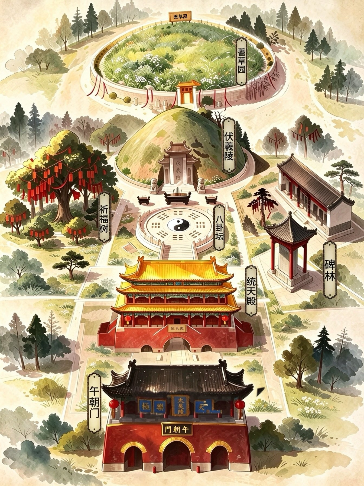

羲皇寻踪 · 太昊陵文化寻踪
完赛证书
CERTIFICATE OF COMPLETION
兹证明
已完成「远观 · 入市 · 朝门 · 陵庙」四幕打卡，走过太昊陵前的集市与内街，推开午朝门，完成陵庙五处场景的寻踪。
一 · 远观二 · 入市三 · 朝门四 · 陵庙
2026 年 11 月 20 日
河南 · 周口 · 淮阳
羲皇寻踪
文化赛道 · 2026
河南 · 周口 · 淮阳
一陵一庙，一城烟火。
从龙湖之上的鸟瞰开始，落入太昊陵前的集市，穿过内街，推开午朝门。
点击「游览」· 从云端走进太昊陵
第二幕 · 入市
瑞虎坊、馍香坊、伞铺、花铺、算命摊——太昊陵庙会，熙熙攘攘，游人如织。
拖动街景 · 点门头进店 · 点下方木牌往前走
第三幕 · 朝门
红墙一层层收拢，尽头是午朝门。推门，才算真正入陵。
点木牌进店 · 点午朝门推门
第三幕 · 朝门
红墙一层层收拢，尽头是午朝门。推门，才算真正入陵。
继续往前走 · 到门前
午朝门，太昊陵内城的正门。正南为午，取正午太阳当头、阳气最盛之意，所以叫午朝门。
红墙、门钉、石狮，都是陵庙的规矩；门内就是人祖的陵院。推开这扇门，才算真正入陵。
第四幕 · 陵庙
太昊陵庙以先天八卦数理兴建，中轴线上九道门依次排开。点开各处场景，把这一趟走完。
完成 5 处场景后，领取完赛证书。

依《太昊陵庙》中轴格局绘制 · 非测绘比例
羲皇寻踪 · 太昊陵文化寻踪
CERTIFICATE OF COMPLETION
兹证明
已完成「远观 · 入市 · 朝门 · 陵庙」四幕打卡，走过太昊陵前的集市与内街，推开午朝门，完成陵庙五处场景的寻踪。
2026 年 11 月 20 日
河南 · 周口 · 淮阳
盖章落纸 · 这一趟就算走完了